2 Travailler avec les données
Dans ce chapitre, nous allons d’abord apprendre quelques concepts de base qui aident à résumer les données.
2.1 Statistiques descriptives
R a intégré des fonctions pour un grand nombre de statistiques descriptives. Pour les variables numériques, nous pouvons résumer les données en examinant leur tendance centrale et leur étendue, par exemple, en utilisant les données de la base mpg déjà chargée dans R.
# on chage le paquet ggplot2 qui contient la base de donnée "mpg".
# On l'utilise pour certains graphiques:
library(ggplot2)Tendance centrale
Supposons que nous voulions connaître la moyenne et la médiane de toutes les valeurs stockées dans la colonne mpg$cty du data.frame :
| Mesure | R |
Résultat |
|---|---|---|
| Moyenne | mean(mpg$cty) |
16.8589744 |
| Médiane | median(mpg$cty) |
17 |
Étendue
Quelle est la variabilité des valeurs de cette colonne, quelle est son étendue ?
| Mesure | R |
Résultat |
|---|---|---|
| Variance | var(mpg$cty) |
18.1130736 |
| Écart type | sd(mpg$cty) |
4.2559457 |
| Écart inter quartile | IQR(mpg$cty) |
5 |
| Minimum | min(mpg$cty) |
9 |
| Maximum | max(mpg$cty) |
35 |
| Étendue | range(mpg$cty) |
9, 35 |
Variable catégorielles
Pour les variables catégorielles, les comptages et les pourcentages peuvent être utilisés pour la statistique descriptive.
table(mpg$drv)##
## 4 f r
## 103 106 25table(mpg$drv) / nrow(mpg)##
## 4 f r
## 0.4401709 0.4529915 0.10683762.2 Graphiques
Maintenant que nous avons des données sur lesquelles travailler et que nous avons appris à les connaître, nos prochaines tâches seront de les visualiser. Souvent, une visualisation correcte peut mettre en évidence des caractéristiques des données qui peuvent servir à une analyse plus approfondie.
Nous allons examiner quatre méthodes de visualisation des données en utilisant les fonctions de base de plot intégrées à R :
- Histogrammes
- Diagramme en bâtons (Barplots)
- Boîtes à moustaches (Boxplots)
- Nuages de points (scatterplots)
2.2.1 Histograms
Pour visualiser une seule variable numérique, un histogramme est utile. Il résume la distribution des valeurs dans un tableau. Dans R vous en créez un en utilisant la fonction hist() :
hist(mpg$cty) # histogramme de la consommation en ville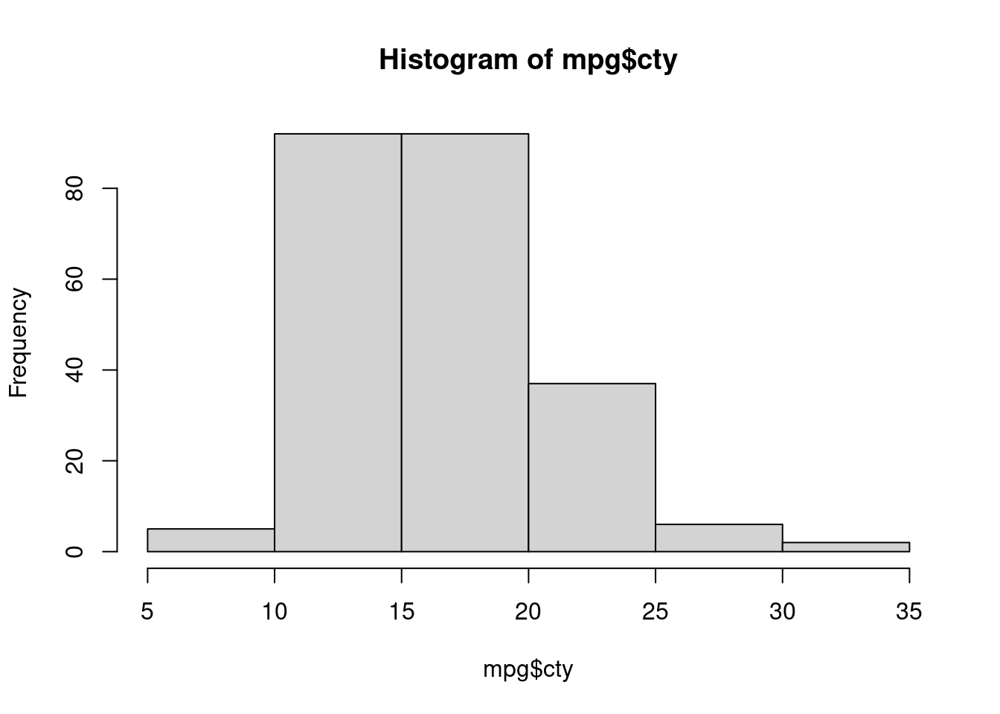
La fonction hist() comporte un certain nombre de paramètres qui peuvent être modifiés pour rendre notre graphe beaucoup plus agréable. Utilisez l’opérateur ? pour lire la documentation de la fonction hist() et voir la liste complète de ces paramètres.
hist(mpg$cty,
xlab = "Miles Par Gallon (en ville)",
main = "Histogramme de MPG (City)", # un titre
breaks = 12, # combien de morceaux ?
col = "red",
border = "blue")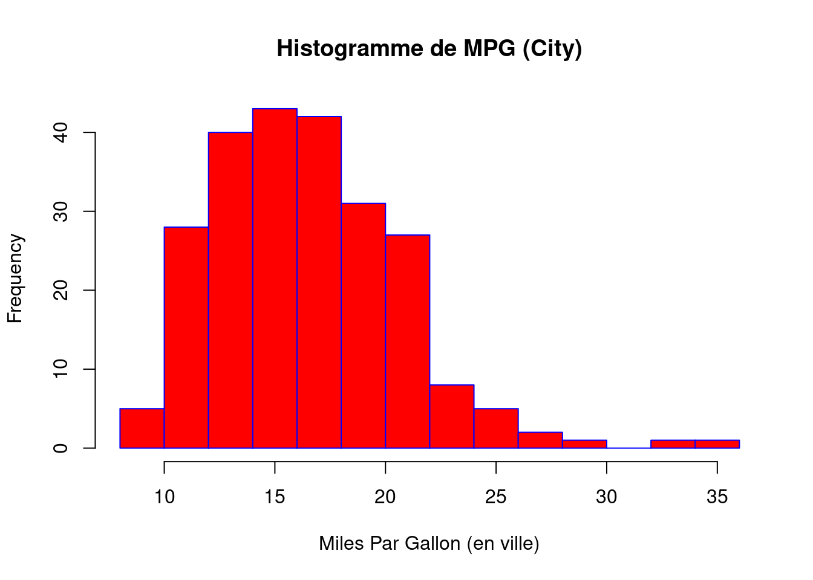
Il est important de toujours veiller à nommer vos axes et à donner un titre au graphique. L’argument break est spécifique à hist(). La saisie d’un entier donnera une suggestion à R sur le nombre de barres à utiliser pour l’histogramme. Par défaut, R essaiera de deviner intelligemment un bon nombre de break, mais comme nous pouvons le voir ici, il est parfois utile de modifier cela vous-même.
2.2.2 Diagrammes en bâtons
Un peu comme un histogramme, un diagramme en bâtons peut fournir un résumé visuel d’une variable catégorielle, ou d’une variable numérique avec un nombre fini de valeurs, comme un classement de 1 à 10.
barplot(table(mpg$drv)) # drv indique le type de traction (avant, arrière, 4x4)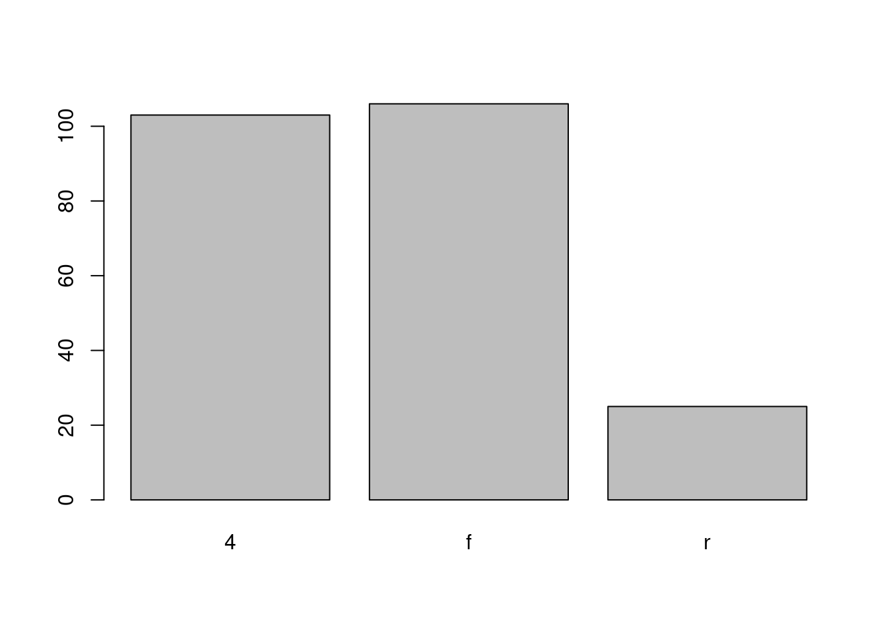
barplot(table(mpg$drv),
xlab = "Traction (f = Avant, r = Arrière, 4 = 4x4)",
ylab = "Fréquence",
main = "Type de traction",
col = "dodgerblue",
border = "darkorange")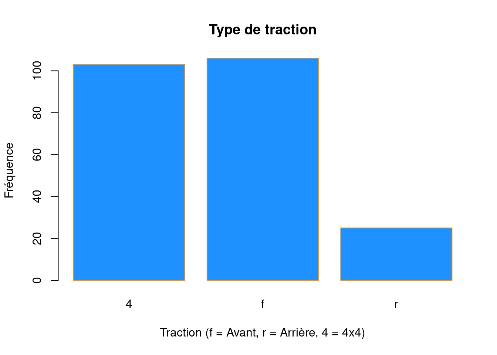
2.2.3 Boîtes à moustaches
Pour visualiser la relation entre une variable numérique et une variable catégorielle, on pourrait utiliser une boîte à moustaches (boxplot). Dans la base de données mpg, la variable drv prend un petit nombre fini de valeurs. Une voiture ne peut être qu’à traction avant, à 4 roues motrices ou à traction arrière.
unique(mpg$drv)## [1] "f" "4" "r"Notez tout d’abord que nous pouvons utiliser une boîte à moustaches unique comme alternative à un histogramme pour visualiser une seule variable numérique. Pour ce faire, dans R, nous utilisons la fonction boxplot(). La boîte montre l’ l’écart interquartile, la ligne continue au milieu est la valeur de la médiane, les moustaches indiquent 1,5 fois l’écart interquartile, et les points sont des valeurs aberrantes.
boxplot(mpg$hwy)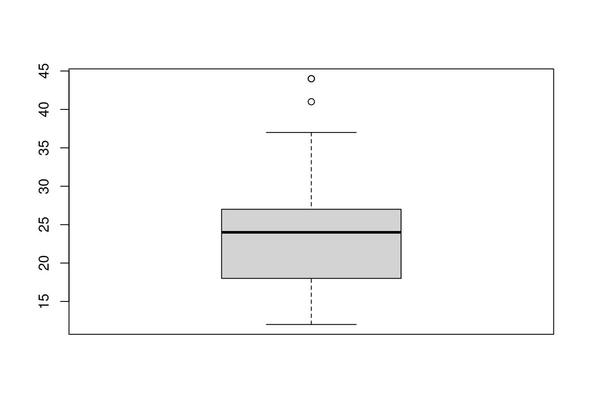
Cependant, nous utiliserons plus souvent des boîtes à moustache pour comparer une variable numérique pour différentes valeurs d’une variable catégorielle.
boxplot(hwy ~ drv, data = mpg)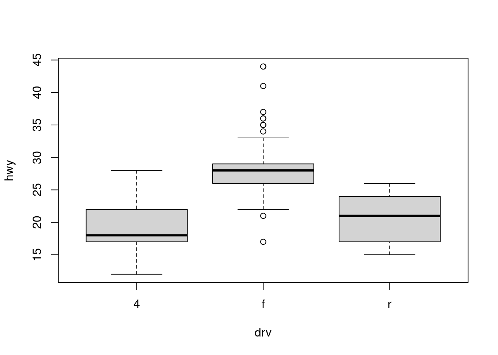
Ici, on a utilisé la commande boxplot() pour créer des boîtes à moustache côte à côte. Cependant, comme nous avons maintenant affaire à deux variables, la syntaxe a changé. La syntaxe R hwy ~ drv, data = mpg est la suivante : “Tracez la variable hwy contre la variable drv en utilisant le jeu de données mpg.” Nous voyons l’utilisation d’un argument ~ (qui spécifie une formule) et aussi d’un argument data =. Il s’agit d’une syntaxe commune à de nombreuses fonctions que nous utiliserons régulièrement.
boxplot(hwy ~ drv, data = mpg,
xlab = "Traction (f = FWD, r = RWD, 4 = 4WD)",
ylab = "Miles Par Gallon (Autoroute)",
main = "MPG (Highway) vs Traction",
pch = 20,
cex = 2,
col = "darkorange",
border = "dodgerblue")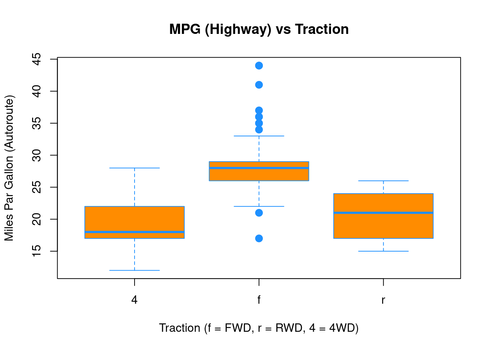
Encore une fois, boxplot() a un certain nombre d’arguments supplémentaires qui ont la capacité de rendre notre graphique plus attrayant visuellement.
2.2.4 Nuages de points
Enfin, pour visualiser la relation entre deux variables numériques, nous utiliserons un nuage de points. Cela peut être fait avec la fonction plot() et la syntaxe ~ que nous venons d’utiliser avec un boxplot. (La fonction plot() peut également être utilisée de manière plus générale ; voir la documentation pour plus de détails).
plot(hwy ~ displ, data = mpg)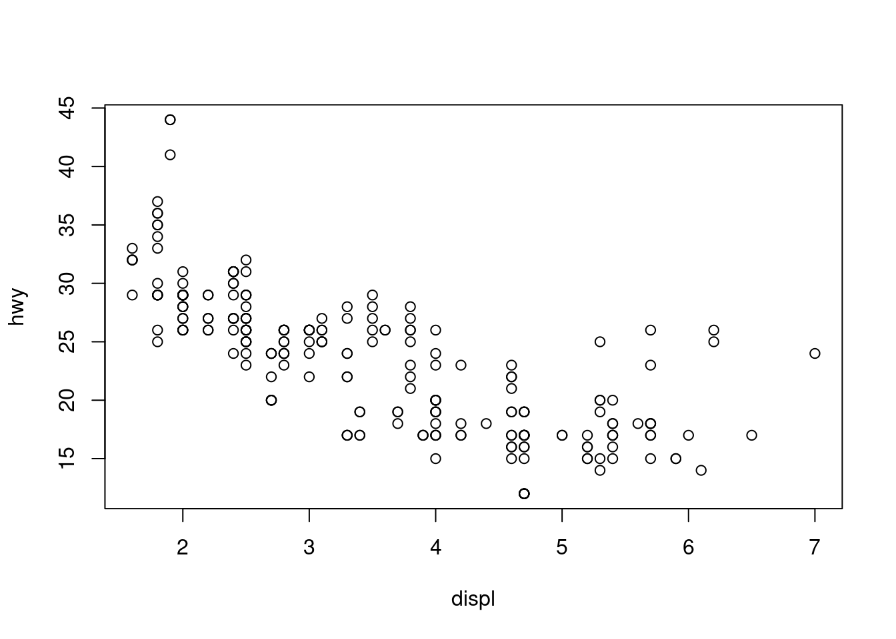
plot(hwy ~ displ, data = mpg,
xlab = "Cylindrée (en litres)",
ylab = "Miles Par Gallon (Autoroute)",
main = "MPG (Highway) vs Cylindrée",
pch = 20,
cex = 2,
col = "dodgerblue")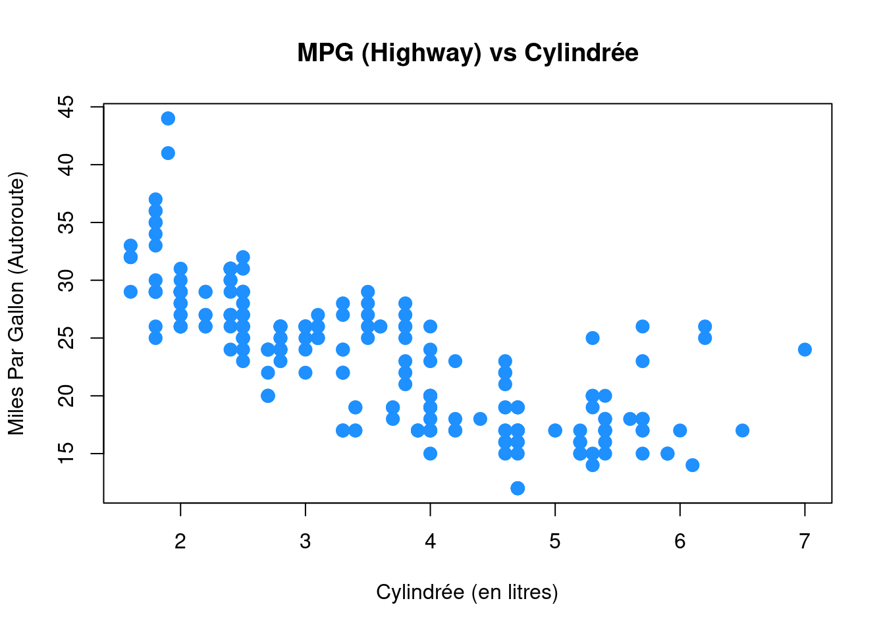
2.2.5 ggplot
Toutes les parcelles ci-dessus auraient également pu être générées en utilisant la fonction ggplot du paquet ggplot2 déjà chargé. Vous avez le choix de la fonction que vous utilisez, mais parfois un graphique est plus facile à construire en base R,, parfois l’inverse.
ggplot(data = mpg,mapping = aes(x=displ,y=hwy)) + geom_point()
Il est impossible de décrire ggplot en termes simples, alors vous pouvez consulter [le site web du paquet] (http://ggplot2.tidyverse.org) qui fournit d’excellents conseils. Nous utiliserons de temps en temps ggplot, afin que vous puissiez vous familiariser avec lui. Montrons rapidement comment on peut personnaliser davantage ce premier graphique :
ggplot(data = mpg, mapping = aes(x=displ,y=hwy)) + # ggplot() crée le graphe de base
geom_point(color="blue",size=2) + # aspect des points
scale_y_continuous(name="Miles Par Gallon (Autoroute)") + # nom de l'axe des y
scale_x_continuous(name="Cylindrée (in litres)") + # nom de l'axe des x
theme_bw() + # changement de thème couleur
ggtitle("MPG (Autoroute) vs Cylindrée") # Titre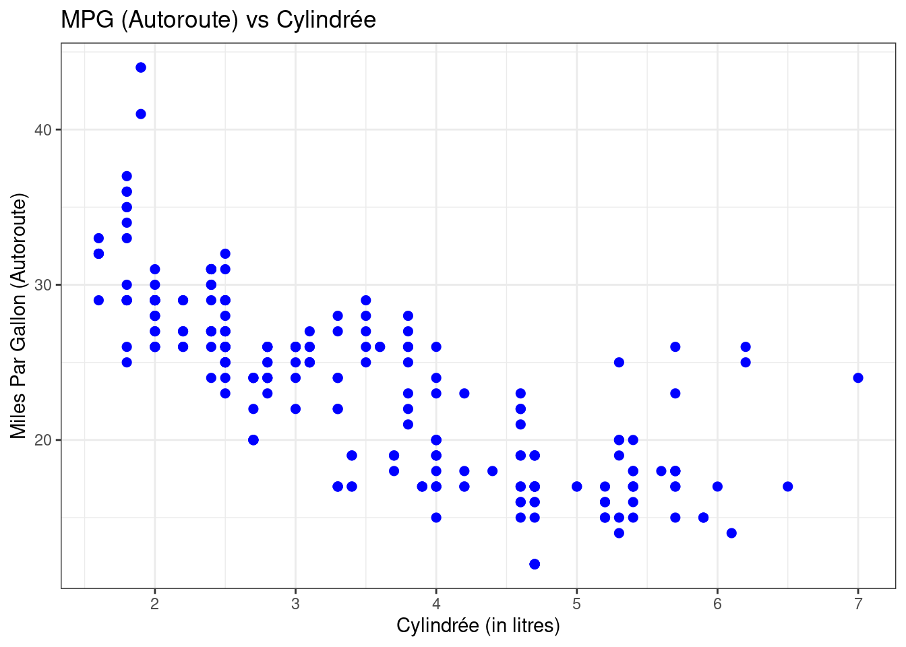
Les graphiques précédents auraient peu être obtenus via ggplot de la façon suivante :
ggplot(data=mpg,mapping=aes(x=cty)) + # graphe de base
geom_histogram(breaks=c(seq(8,36,2))) + # ajout de l'histogramme avec des points de coupure explicites
labs(title = "Histogramme de mpg (cty)", x ="Miles Par Gallon (en ville)" , y="Fréquence") # labels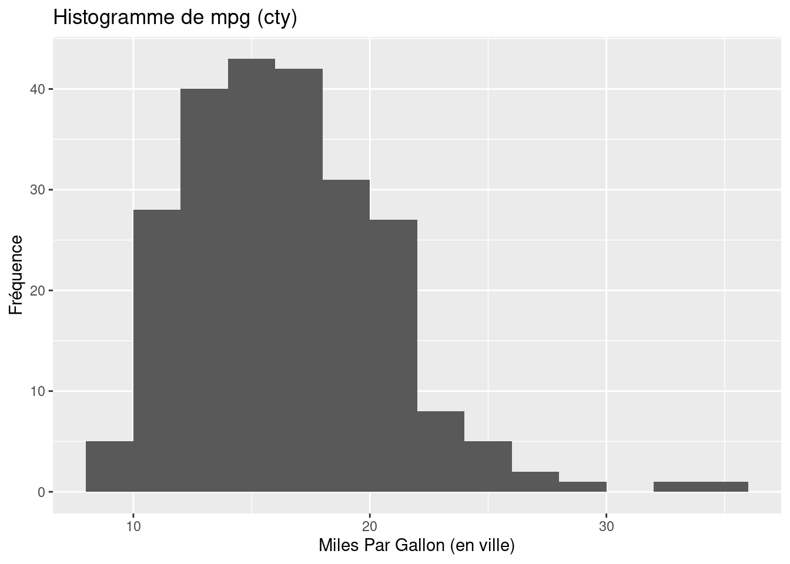
ggplot(data=mpg,mapping=aes(x=drv)) + # graphe de base
geom_bar() + # ajour des bâtons
scale_x_discrete("Traction", labels=c("4"="4x4","f"="avant","r"="arrière")) + # lables des x
labs(y="Fréquence", title="Type de traction") # autres labels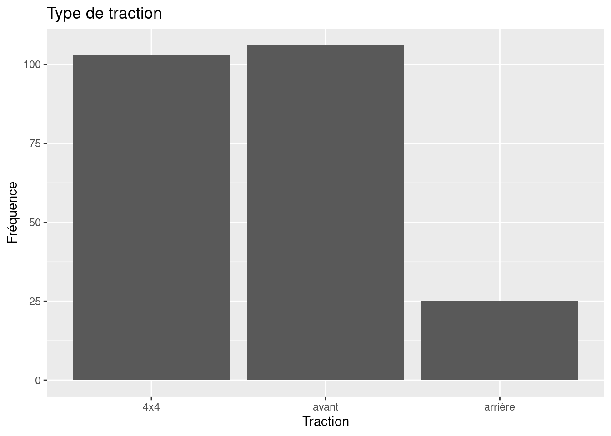
ggplot(data=mpg,mapping=aes(x=drv,y=hwy)) + # graphe de base
geom_boxplot() + # ajout des boîtes à moustache
scale_x_discrete("Traction", labels=c("4"="4x4","f"="avant","r"="arrière")) + # labels de x
labs(y="Consommation (mpg, autoroute",title="MPG (Highway) vs Traction") # autres labels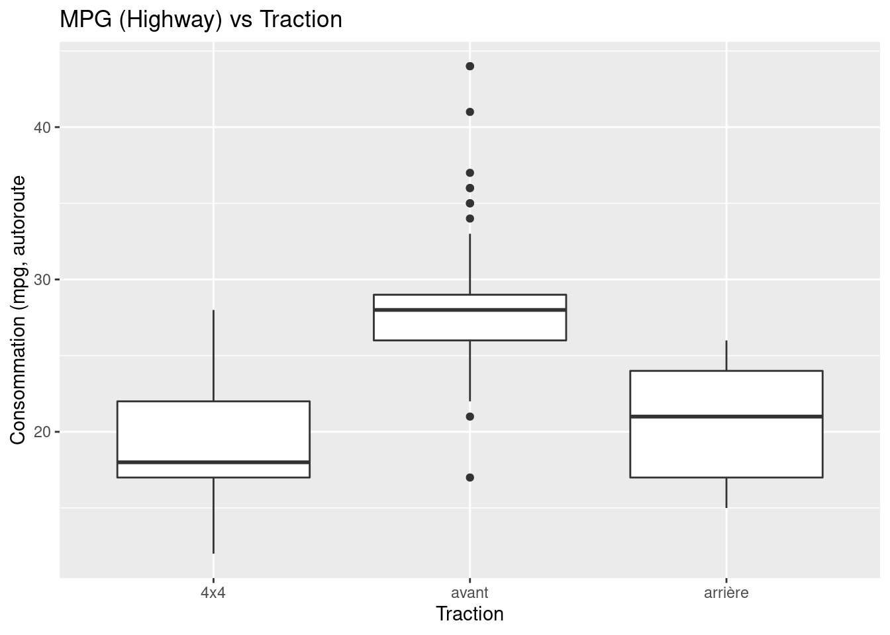
2.3 Statistiques bivariées
Nous nous intéressons souvent à la façon dont deux variables sont liées l’une à l’autre. Les concepts fondamentaux sont ici la covariance et la corrélation. Générons des données sur “x” et “y” et traçons les relations entre ces deux variables :
Figure 2.1: Quelle est la relation entre \(x\) et \(y\) ?
En prenant comme exemple les données de ce graphique, les concepts de covariance et de corrélation se rapportent au type de question suivante :
Étant donné que nous observons une valeur de \(x=2\), disons, pouvons-nous nous attendre à une valeur élevée ou faible de \(y\), en moyenne ? Quelque chose comme \(y=2\) ou plutôt quelque chose comme \(y=-2\) ?
La réponse à ce type de question peut être apportée en calculant la covariance des deux variables :
cov(x,y) ## [1] 1.041195Ici, cela donne un nombre positif, 1.04, indiquant que, lorsqu’une variable se situe au-dessus de sa moyenne, l’autre l’est aussi. En d’autres termes, cela indique une relation positive. Ce qui est moins clair, cependant, c’est la façon d’interpréter la valeur de 1.04. S’agit-il d’une association positive forte ou faible ?
En fait, nous ne pouvons pas le dire. Cela s’explique par le fait que la covariance est mesurée dans les mêmes unités que les données, et que ces unités diffèrent souvent entre les deux variables. Il existe cependant une meilleure mesure à notre disposition, la corrélation, qui est obtenue en standardisant chaque variable. En standardisant une variable \(x\) on veut dire diviser \(x\) par son écart-type \(\sigma_x\) : \[ z = \frac{x}{\sigma_x} \]
Le coefficient de corrélation entre \(x\) et \(y\), communément appelé \(r_{x,y}\), est alors défini comme
\[ r_{x,y} = \frac{cov(x,y)}{\sigma_x \sigma_y}, \]
et nous nous débarrassons du problème des unités. En R, vous pouvez taper
cor(x,y)## [1] 0.9142495Maintenant, c’est mieux. Étant donné que la corrélation doit se situer dans \([-1,1]\), une valeur de 0.91 est indicative d’une relation positive assez forte pour les données de la figure 2.1
Notez que le fait que \(x,y\) soient tirés d’une distribution continue (ils sont distribués selon une loi normale bivariée) n’a aucune implication sur la covariance et la corrélation : Nous pouvons également calculer ces mesures pour des variables aléatoires discrètes.
2.4 Le tidyverse
Hadley Wickham est l’auteur des paquets R ggplot2 et aussi de dplyr (et aussi d’une myriade d’autres). Avec ggplot2, il a introduit ce que l’on appelle la grammaire des graphiques (d’où gg) dans R. Une grammaire dans le sens où il y a des noms et des verbes et une syntaxe, c’est-à-dire des règles sur la façon dont les noms et les verbes doivent être mis ensemble pour construire une phrase compréhensible. Il a étendu l’idée de grammaire à divers autres paquets. Le paquet tidyverse est une collection de ces paquets.
Les données tidy sont des données où :
- Chaque variable est une colonne
- Chaque observation est une ligne
- Chaque valeur est une cellule
On peut dire que c’est une feuille de calcul ordinaire. Et vous avez raison ! Cependant, la plupart du temps, les données nous arrivent pas en ordre, et nous devons d’abord les nettoyer, ou les “ranger”. Une fois qu’elles sont au format “tidy”, nous pouvons utiliser les outils tidyverse avec une grande efficacité pour analyser les données et ne plus nous soucier de savoir quel outil utiliser.
2.4.1 Primers de rstudio.cloud
Le site rstudio.cloud propose un ensemble de tutoriels (primers) interactifs de grande qualité basés sur le tidyverse. Après avoir crée un compte gratuit, rendez-vous sur leur page Primers. Vous y trouverez les tutoriels suivants :
- The Basics Pour avoir une intuition de la façon dont fonctionnent
Ret les paquets dutidyverse - Work with data vous donnera une bonne base de compréhension des
tibbles(voir ci-dessous), du paquetdplyr(très utile, en particulier l’opérateur de pipe%>%, voir ci-dessous) - Visualize Data fera de vous des maîtres du graphique avec
ggplot - Tidy Your Data vous initiera à la manipulation plus avancée de base de donnée
Les tutoriels Iterate et Write functions seront utiles pour des programmeurs débutants, mais pas forcément nécessaires immédiatement.
Au long de nos enseignements, nous sezront amenés à utiliser des commandes du tidyverse, en particulier de dplyr et ggplot2. Nous vous conseillons fortement de vous familiariser avec ces outils en effectuant les tutoriaux.
2.4.2 Importer des données .csv de façon tidy
Nous aurions pu utiliser la fonction read_csv() du paquet readr pour lire notre exemple de base de données du chapitre précédent. La fonction readr read_csv() a un certain nombre d’avantages par rapport à la fonction intégrée read.csv. Par exemple, elle est beaucoup plus rapide pour lire des données plus volumineuses. Elle utilise également le paquet tibble pour lire les données comme un tibble. Un tibble est simplement un data.frame qui s’imprime avec une certaine logique. Remarquez dans la sortie ci-dessous que nous avons des informations supplémentaires telles que la dimension et le type de variable.
library(readr) # vous devez `install.packages("readr")` une seule fois
example_data_from_disk = read_csv("data/example-data.csv")2.4.3 Les data.frames “tidy” sont des tibbles
Importons quelques données du paquet ggplot2 :
data(mpg,package = "ggplot2") # on charge les données `mpg` depuis le paquet `ggplot2`
head(mpg, n = 10)## # A tibble: 10 x 11
## manufacturer model displ year cyl trans drv cty hwy fl class
## <chr> <chr> <dbl> <int> <int> <chr> <chr> <int> <int> <chr> <chr>
## 1 audi a4 1.8 1999 4 auto(l… f 18 29 p comp…
## 2 audi a4 1.8 1999 4 manual… f 21 29 p comp…
## 3 audi a4 2 2008 4 manual… f 20 31 p comp…
## 4 audi a4 2 2008 4 auto(a… f 21 30 p comp…
## 5 audi a4 2.8 1999 6 auto(l… f 16 26 p comp…
## 6 audi a4 2.8 1999 6 manual… f 18 26 p comp…
## 7 audi a4 3.1 2008 6 auto(a… f 18 27 p comp…
## 8 audi a4 quat… 1.8 1999 4 manual… 4 18 26 p comp…
## 9 audi a4 quat… 1.8 1999 4 auto(l… 4 16 25 p comp…
## 10 audi a4 quat… 2 2008 4 manual… 4 20 28 p comp…La fonction head() affichera les n premières observations de la base de données, comme nous l’avions vu. La fonction head() était plus utile avant les tibbles. Remarquez que “mpg” est déjà un tibble, donc la sortie de “head” indique qu’il n’y a que 10 observations. Notez que cela s’applique à head(mpg, n = 10) et non à mpg lui-même. Notez également que les tibbles impriment un nombre limité de lignes et de colonnes par défaut. La dernière ligne de la sortie imprimée indique que les lignes et les colonnes ont été omises.
mpg## # A tibble: 234 x 11
## manufacturer model displ year cyl trans drv cty hwy fl class
## <chr> <chr> <dbl> <int> <int> <chr> <chr> <int> <int> <chr> <chr>
## 1 audi a4 1.8 1999 4 auto(l… f 18 29 p comp…
## 2 audi a4 1.8 1999 4 manual… f 21 29 p comp…
## 3 audi a4 2 2008 4 manual… f 20 31 p comp…
## 4 audi a4 2 2008 4 auto(a… f 21 30 p comp…
## 5 audi a4 2.8 1999 6 auto(l… f 16 26 p comp…
## 6 audi a4 2.8 1999 6 manual… f 18 26 p comp…
## 7 audi a4 3.1 2008 6 auto(a… f 18 27 p comp…
## 8 audi a4 quat… 1.8 1999 4 manual… 4 18 26 p comp…
## 9 audi a4 quat… 1.8 1999 4 auto(l… 4 16 25 p comp…
## 10 audi a4 quat… 2 2008 4 manual… 4 20 28 p comp…
## # … with 224 more rowsRegardons également str afin de se familiariser avec le contenu de la base
str(mpg)## tibble [234 × 11] (S3: tbl_df/tbl/data.frame)
## $ manufacturer: chr [1:234] "audi" "audi" "audi" "audi" ...
## $ model : chr [1:234] "a4" "a4" "a4" "a4" ...
## $ displ : num [1:234] 1.8 1.8 2 2 2.8 2.8 3.1 1.8 1.8 2 ...
## $ year : int [1:234] 1999 1999 2008 2008 1999 1999 2008 1999 1999 2008 ...
## $ cyl : int [1:234] 4 4 4 4 6 6 6 4 4 4 ...
## $ trans : chr [1:234] "auto(l5)" "manual(m5)" "manual(m6)" "auto(av)" ...
## $ drv : chr [1:234] "f" "f" "f" "f" ...
## $ cty : int [1:234] 18 21 20 21 16 18 18 18 16 20 ...
## $ hwy : int [1:234] 29 29 31 30 26 26 27 26 25 28 ...
## $ fl : chr [1:234] "p" "p" "p" "p" ...
## $ class : chr [1:234] "compact" "compact" "compact" "compact" ...Dans cette base de données, une observation porte sur u modèle particulièr d’une voiture une année donnée, et les variables décrivent les attributs de la voiture, par exemple son rendement énergétique sur autoroute.
Pour en savoir plus sur l’ensemble de données, nous utilisons l’opérateur ? pour extraire la documentation des données.
?mpgTravailler avec des tibbles est essentiellement la même chose que travailler avec des data.frames simples :
names(mpg)## [1] "manufacturer" "model" "displ" "year" "cyl"
## [6] "trans" "drv" "cty" "hwy" "fl"
## [11] "class"mpg$year## [1] 1999 1999 2008 2008 1999 1999 2008 1999 1999 2008 2008 1999 1999 2008 2008
## [16] 1999 2008 2008 2008 2008 2008 1999 2008 1999 1999 2008 2008 2008 2008 2008
## [31] 1999 1999 1999 2008 1999 2008 2008 1999 1999 1999 1999 2008 2008 2008 1999
## [46] 1999 2008 2008 2008 2008 1999 1999 2008 2008 2008 1999 1999 1999 2008 2008
## [61] 2008 1999 2008 1999 2008 2008 2008 2008 2008 2008 1999 1999 2008 1999 1999
## [76] 1999 2008 1999 1999 1999 2008 2008 1999 1999 1999 1999 1999 2008 1999 2008
## [91] 1999 1999 2008 2008 1999 1999 2008 2008 2008 1999 1999 1999 1999 1999 2008
## [106] 2008 2008 2008 1999 1999 2008 2008 1999 1999 2008 1999 1999 2008 2008 2008
## [121] 2008 2008 2008 2008 1999 1999 2008 2008 2008 2008 1999 2008 2008 1999 1999
## [136] 1999 2008 1999 2008 2008 1999 1999 1999 2008 2008 2008 2008 1999 1999 2008
## [151] 1999 1999 2008 2008 1999 1999 1999 2008 2008 1999 1999 2008 2008 2008 2008
## [166] 1999 1999 1999 1999 2008 2008 2008 2008 1999 1999 1999 1999 2008 2008 1999
## [181] 1999 2008 2008 1999 1999 2008 1999 1999 2008 2008 1999 1999 2008 1999 1999
## [196] 1999 2008 2008 1999 2008 1999 1999 2008 1999 1999 2008 2008 1999 1999 2008
## [211] 2008 1999 1999 1999 1999 2008 2008 2008 2008 1999 1999 1999 1999 1999 1999
## [226] 2008 2008 1999 1999 2008 2008 1999 1999 2008mpg$hwy## [1] 29 29 31 30 26 26 27 26 25 28 27 25 25 25 25 24 25 23 20 15 20 17 17 26 23
## [26] 26 25 24 19 14 15 17 27 30 26 29 26 24 24 22 22 24 24 17 22 21 23 23 19 18
## [51] 17 17 19 19 12 17 15 17 17 12 17 16 18 15 16 12 17 17 16 12 15 16 17 15 17
## [76] 17 18 17 19 17 19 19 17 17 17 16 16 17 15 17 26 25 26 24 21 22 23 22 20 33
## [101] 32 32 29 32 34 36 36 29 26 27 30 31 26 26 28 26 29 28 27 24 24 24 22 19 20
## [126] 17 12 19 18 14 15 18 18 15 17 16 18 17 19 19 17 29 27 31 32 27 26 26 25 25
## [151] 17 17 20 18 26 26 27 28 25 25 24 27 25 26 23 26 26 26 26 25 27 25 27 20 20
## [176] 19 17 20 17 29 27 31 31 26 26 28 27 29 31 31 26 26 27 30 33 35 37 35 15 18
## [201] 20 20 22 17 19 18 20 29 26 29 29 24 44 29 26 29 29 29 29 23 24 44 41 29 26
## [226] 28 29 29 29 28 29 26 26 26La sélection de sous-parties de la base est également similaire à la data.frame. Ici, nous trouvons des véhicules à faible consommation de carburant qui font plus de 35 miles par gallon et nous n’affichons que le “manufacturer”, le “model” et “year”.
# mpg[condition ligne, condition colonne]
mpg[mpg$hwy > 35, c("manufacturer", "model", "year")]## # A tibble: 6 x 3
## manufacturer model year
## <chr> <chr> <int>
## 1 honda civic 2008
## 2 honda civic 2008
## 3 toyota corolla 2008
## 4 volkswagen jetta 1999
## 5 volkswagen new beetle 1999
## 6 volkswagen new beetle 1999Une alternative serait d’utiliser la fonction subset() qui a une syntaxe plus lisible.
subset(mpg, subset = hwy > 35, select = c("manufacturer", "model", "year"))Enfin, et de façon plus tidy, nous pourrions utiliser les fonctions filter et select du paquet dplyr qui introduit l’opérateur pipe f(x) %>% g(z) du paquet magrittr. Cet opérateur prend la sortie de la première commande, par exemple y = f(x), et la passe en tant que premier argument à la fonction suivante, c’est-à-dire que nous obtiendrions g(y,z) ici.^[Un pipe est un concept du monde Unix, où il signifie prendre la sortie d’une commande, et la passer à une autre commande. De cette façon, on peut construire une pipeline de commandes. Pour plus d’informations sur l’opérateur de pipe dans R, vous pourriez être intéressé [par ce tutoriel] (https://www.datacamp.com/community/tutorials/pipe-r-tutorial).
library(dplyr)
mpg %>%
filter(hwy > 35) %>%
select(manufacturer, model, year)## # A tibble: 6 x 3
## manufacturer model year
## <chr> <chr> <int>
## 1 honda civic 2008
## 2 honda civic 2008
## 3 toyota corolla 2008
## 4 volkswagen jetta 1999
## 5 volkswagen new beetle 1999
## 6 volkswagen new beetle 1999Notez que la syntaxe ci-dessus est équivalente à la commande suivante sans pipe (qui est beaucoup plus difficile à lire !):
library(dplyr)
select(filter(mpg, hwy > 35), manufacturer, model, year)## # A tibble: 6 x 3
## manufacturer model year
## <chr> <chr> <int>
## 1 honda civic 2008
## 2 honda civic 2008
## 3 toyota corolla 2008
## 4 volkswagen jetta 1999
## 5 volkswagen new beetle 1999
## 6 volkswagen new beetle 1999Ces trois approches produisent les mêmes résultats. La méthode que vous utiliserez dépendra largement de la situation donnée ainsi que de vos préférences.
2.4.3.1 Exercice 1
- Assurez-vous que l’ensemble de données
mpgest chargé en tapantdata(mpg)(etlibrary(ggplot2)si ce n’est pas le cas !) Utilisez la fonctiontablepour savoir combien de voitures ont été construites par mercury ? - Quelle est l’année moyenne de construction des voitures dans cet ensemble de données ? Utilisez la fonction
meansur le sous-ensemble de la colonneyearqui correspond à “audi”. (Attention : le sous-ensemble d’un “tibble” renvoie un “tibble” (et non un vecteur) !. donc récupérez la colonneyearaprès avoir extrait le sous “tibble”). - Utilisez la syntaxe de pipe de
dplyrdu dessus d’abord avecgroup_byet ensuite avecsummarise(newvar=votre_expression)pour trouver la moyenneyearpar tous les fabricants (c’est à dire la même que la tâche précédente, mais pour tous les fabricants. n’écrivez pas une boucle !)